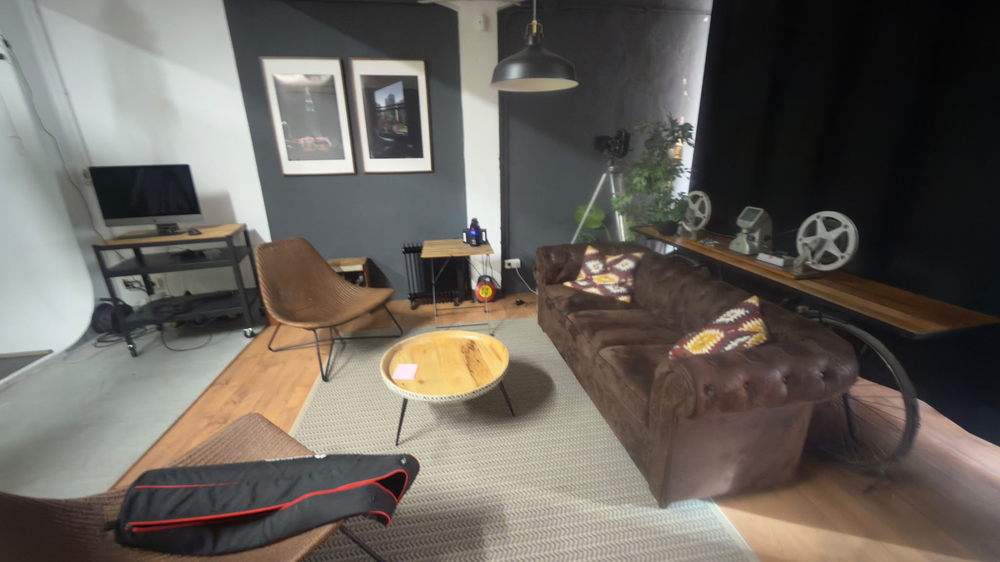

STOCK SHOOTING · ESTUDIO REALLIFESTYLE · MISMO LUGAR
20 acciones
en un salón.
Una única localización: el salón real del estudio. No cambiamos de casa ni de decorado. Cambian la acción, la relación entre modelos y el encuadre.
20 acciones diferentes.

Esta imagen es el lugar de referencia. Todas las acciones siguientes se ruedan aquí, aprovechando el sofá, la mesa, la butaca, la televisión y la pared negra.